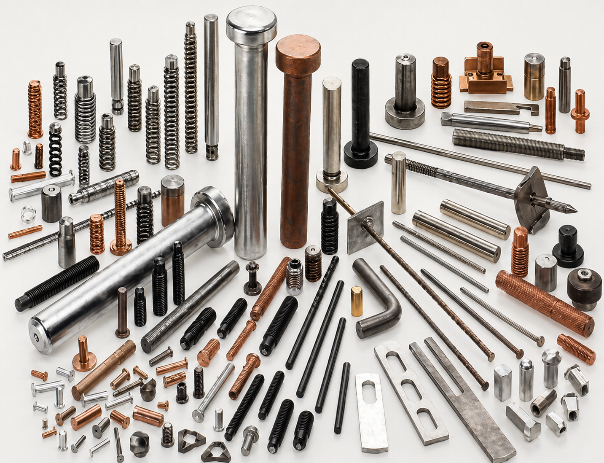

C’est LA méthode économique d’attaches pour plusieurs secteurs de l’industrie.
Permet d’épargner beaucoup de temps et d’argent
Augmente la productivité
Accroît la compétitivité

Les ATTACHES D.F. offre toute une série de différents systèmes de fixation pouvant être utilisés pour les meubles et les agencements, les métaux de base, les produits métalliques, les machines électriques, électroniques et non électriques, le matériel de transport et dans l'industrie de la construction. Les procédés utilisés par ces systèmes sont conçus pour accélérer la production en éliminant certaines étapes de la méthode traditionnelle de fixation et pour porter au maximum le rendement des opérateurs, grâce à leur perfectionnement technologiques. Les représentants des ATTACHES D.F. vous aiderons à choisir le système qu'il vous faut pour accroître votre.